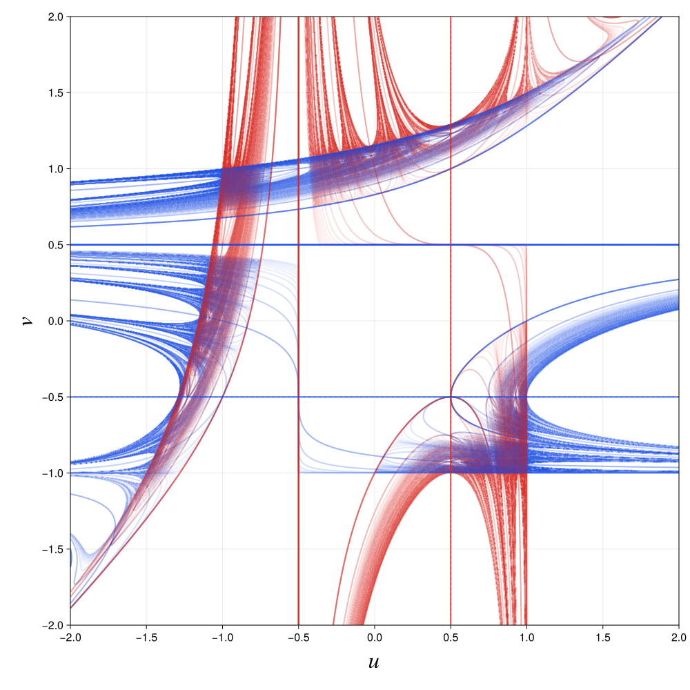

Calculate a Chebyshev cubic kneading diagram
This tutorial calculates a kneading diagram for the two-parameter Chebyshev cubic family. It follows both critical orbits, records where an orbit crosses either critical point, extracts those critical-relation curves, and renders the result.
The map family
The family is
\[f_{u,v}(x) = \frac{u-v}{2}\left(4x^3-3x\right) + \frac{u+v}{2}.\]
Its critical points are
\[c_-=-\frac{1}{2}, \qquad c_+=\frac{1}{2},\]
and the parameters are their critical values:
\[f_{u,v}(c_-)=u, \qquad f_{u,v}(c_+)=v.\]
Explore the family interactively in the Chebyshev cubic Desmos calculator.
A contour in this tutorial marks parameters where an entry in a critical orbit equals $c_-$ or $c_+$. These are critical-relation curves of the form
\[f_{u,v}^{n}(c_s)=c_t, \qquad s,t\in\{-,+\}.\]
Define the family and parameter plane
First define the map and a rectangular grid in $(u,v)$. A 101 x 101 grid keeps this documentation build quick. The complete example uses 1000 x 1000.
using Kneading.Diagrams
@inline function chebyshev_cubic(u, v, x)
return ((u - v) / 2) * (4x^3 - 3x) + (u + v) / 2
end
grid_size = 101
parameter_values = collect(range(-2.0, 2.0; length = grid_size))
plane = ParameterPlane(
parameter_values,
parameter_values;
xname = "𝑢",
yname = "𝑣",
)Kneading.Diagrams.ParameterPlane{Float64, Float64}([-2.0, -1.96, -1.92, -1.88, -1.84, -1.8, -1.76, -1.72, -1.68, -1.64 … 1.64, 1.68, 1.72, 1.76, 1.8, 1.84, 1.88, 1.92, 1.96, 2.0], [-2.0, -1.96, -1.92, -1.88, -1.84, -1.8, -1.76, -1.72, -1.68, -1.64 … 1.64, 1.68, 1.72, 1.76, 1.8, 1.84, 1.88, 1.92, 1.96, 2.0], "𝑢", "𝑣")The first array dimension corresponds to v, the vertical axis, and the second corresponds to u, the horizontal axis.
Initialize the critical orbits
Create the diagram and two scalar fields. The fields initially contain the left and right critical points at every parameter pair.
critical_points = (-0.5, 0.5)
iterates = 8
diagram = KneadingDiagram(
plane;
metadata = (
family = :chebyshev_cubic,
critical_points = critical_points,
iterates = iterates,
),
)
orbit_values = Array{Float64}(undef, grid_size, grid_size, 2)
orbit_values[:, :, 1] .= critical_points[1]
orbit_values[:, :, 2] .= critical_points[2]
diagram.metadata(family = :chebyshev_cubic, critical_points = (-0.5, 0.5), iterates = 8)Advance and contour the orbits
At each step, scan_plane! advances both critical orbits at every parameter pair. For each orbit, add_level_contours! extracts one contour at each critical point.
for iterate in 2:iterates
scan_plane!(orbit_values, plane) do values, u, v
values[1] = chebyshev_cubic(u, v, values[1])
values[2] = chebyshev_cubic(u, v, values[2])
end
for (source_index, source) in enumerate((:left_critical, :right_critical))
field = view(orbit_values, :, :, source_index)
for level in critical_points
add_level_contours!(
diagram,
field;
source = source,
iterate = iterate,
level = level,
)
end
end
end
(
layers = length(diagram.layers),
nonempty_layers = count(layer -> !isempty(layer.segments), diagram.layers),
segments = sum(length(layer.segments) for layer in diagram.layers),
)(layers = 28, nonempty_layers = 28, segments = 17748)The stored critical point is orbit entry 1. One map application produces entry 2, so ContourLayer.iterate uses one-based orbit-entry numbers. A layer labeled iterate = 2 therefore represents $f(c_s)=c_t$.
Threading behavior
The tutorial is partly multithreaded. scan_plane! uses Threads.@threads across the parameter plane's u columns. Each loop task advances both critical orbits for every v value in its current column. Every callback writes only to its own orbit_values[v_index, u_index, :] slice, so these updates do not share mutable output locations.
Julia must start with more than one thread for this stage to run in parallel. Use --threads=auto to let Julia select the thread count:
julia --threads=auto --project=examples \
examples/chebyshev_cubic_kneading.jlCheck the active thread count inside Julia with:
Threads.nthreads()The outer loop over orbit entries remains sequential. Entry $n+1$ depends on entry $n$, and scan_plane! waits for all parameter columns to finish before the next entry begins. After each orbit update, the four calls to add_level_contours! run sequentially. Their marching-squares work in level_contours is currently serial, as is the final CairoMakie rendering.
Consequently, additional threads accelerate only the critical-orbit updates; they do not parallelize contour extraction or plotting. The tutorial code and chebyshev_cubic_kneading.jl use this threaded scan_plane! path. The reusable calculation in chebyshev_cubic_scan.jl currently advances the parameter grid with explicit serial loops.
Render the diagram
Load CairoMakie to activate the plotting extension. Red curves come from the left critical orbit and blue curves come from the right critical orbit. Older orbit entries are drawn more strongly, while later entries fade according to the opacity function.
using CairoMakie
colors = Dict(
:left_critical => RGBf(0.85, 0.15, 0.12),
:right_critical => RGBf(0.10, 0.30, 0.90),
)
save_kneading_contours(
"chebyshev_cubic_kneading_diagram.png",
diagram;
colors = colors,
opacity = iterate -> Float64(iterate - 1)^(-1.2),
xticks = -2.0:0.5:2.0,
yticks = -2.0:0.5:2.0,
)The full 1000 x 1000, 20-entry calculation produces:

Every orbit entry adds four layers: two source critical points times two target critical points. With entries 2 through 20, the full diagram therefore contains 76 contour layers.
Run the complete example
The repository contains the complete plotting script and a dependency-free calculation used by its tests:
chebyshev_cubic_kneading.jlcalculates and saves the full figure.chebyshev_cubic_scan.jlexposes the calculation as a reusable example module.
From the repository root, install the example environment and run the full plot:
julia --project=examples -e 'using Pkg; Pkg.instantiate()'
julia --project=examples examples/chebyshev_cubic_kneading.jlFor a quicker preview, reduce the grid and number of orbit entries:
CHEBYSHEV_GRID_SIZE=200 CHEBYSHEV_ITERATES=8 \
julia --project=examples examples/chebyshev_cubic_kneading.jl